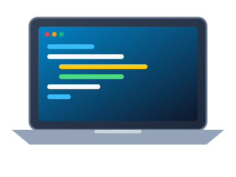

HTML stands for HyperText Markup Language. It is used to design web pages using a markup language. HTML is the combination of Hypertext and Markup language. Hypertext defines the link between the web pages. A markup language is used to define the text document within tag which defines the structure of web pages. HTML is a markup language that is used by the browser to manipulate text, images, and other content to display it in the required format.
C is a procedural programming language. It was initially developed by Dennis Ritchie as a system programming language to write operating system. The main features of C language include low-level access to memory, simple set of keywords, and clean style, these features make C language suitable for system programming like operating system or compiler development.
Java has been one of the most popular programming language for many years. Java is Object Oriented. However it is not considered as pure object oriented as it provides support for primitive data types (like int, char, etc). The Java codes are first compiled into byte code (machine independent code). Then the byte code is run on Java Virtual Machine (JVM) regardless of the underlying architecture.

Python is a high-level, interpreted programming language known for its simplicity and readability. When using flex-direction: row-reverse, the image appears on the left side and text appears on the right side, creating a dynamic and engaging alternating layout.